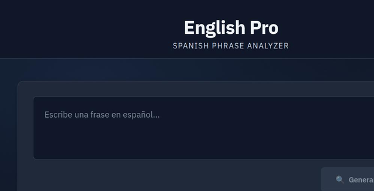
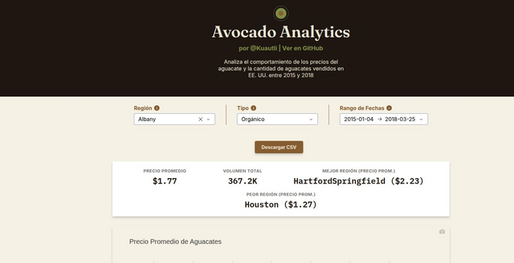
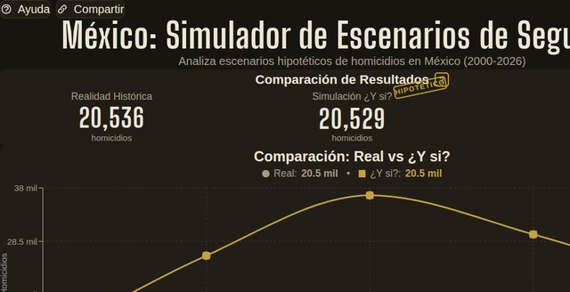
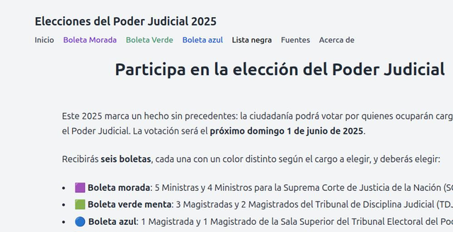
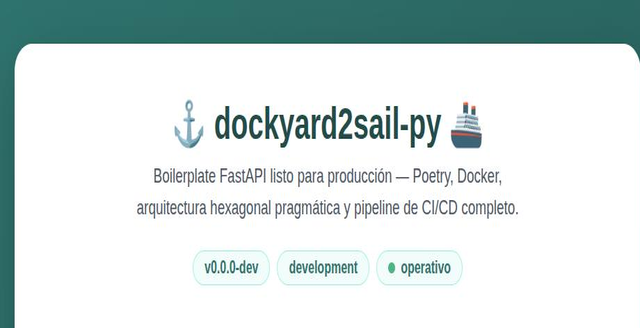
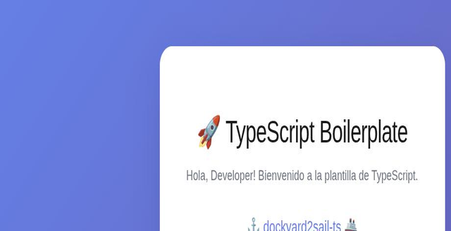
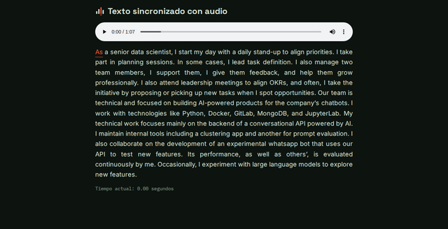
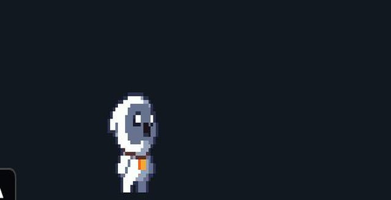

translate-and-teach
Analizador español→inglés con gramática y tips de aprendizaje mediante Llama 3.3 70B vía Together.ai.
AI Engineer — construyo sistemas con agentes LLM, productos de datos y bases de software listas para evolucionar.
🌐 cuauhtemocbe.com · 💼 LinkedIn
Este portafolio reúne flujos multiagente con guardrails, productos de datos, interfaces interactivas y templates reproducibles. Cada repositorio muestra una parte del enfoque: construir software útil con prácticas de ingeniería verificables.

Analizador español→inglés con gramática y tips de aprendizaje mediante Llama 3.3 70B vía Together.ai.
Generador local de reels verticales que decide pacing, transiciones y captions con Claude Code CLI.
Entorno reproducible con Docker, Poetry y JupyterLab para practicar evaluación de agentes.
Instalación automatizada de Ollama y Open WebUI con Docker para ejecutar LLMs localmente.
Webapp de ML para predecir Bitcoin al día siguiente, registrar predicciones, revisar error histórico y simular PnL.

Dashboard en Python Dash para explorar precios y ventas de aguacate en EE. UU. (2015–2018).

Simulador interactivo de escenarios hipotéticos de homicidios en México (2000–2026).

Webapp en Flask para comparar y analizar candidaturas judiciales en México.
Colección de clasificación, ETL con Postgres y análisis de sentimiento con NLP.
Entorno Dockerizado con Python, Jupyter y Poetry para actividades de ciencia de datos 2024–2025.

Template de API REST en Python con FastAPI, Docker y arquitectura hexagonal; incluye typecheck, cobertura y Trivy.

Base TypeScript con Docker, DevContainers y automatización de typecheck, tests, build y audit.

SPA en React + Vite que resalta cada palabra de una transcripción sincronizada con audio.

Videojuego en Phaser.js, TypeScript y Vite desarrollado junto con mi hijo usando vibe coding.
META-PROJECTS · ORQUESTACIÓN MULTIAGENTE — meta-projects es un meta-repo privado que orquesta este portafolio (~/Projects) con agentes LLM. Aunque el código no es público, sus decisiones se reflejan en los repositorios visibles:
Cambios recientes en los repositorios públicos.
Python TypeScript React FastAPI Flask Dash LLMs Claude Llama Together.ai Docker Railway GitHub Actions pytest